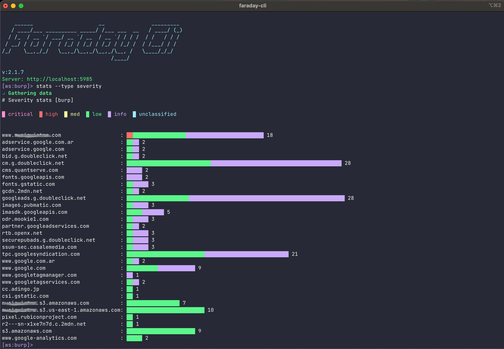

Commands¶
All the commands can be run in Shell Mode (type faraday-cli and then the
command) or in Command Mode (faraday-cli <command> ...).
Getting help
faraday-cli --helpshows the common commands and examples.faraday-cli help -vlists every command;faraday-cli help <command>orfaraday-cli <command> -hshows a command's options (e.g.faraday-cli scanners run -h).
Quoting arguments in Command Mode
Quote arguments the same way you would for any other CLI:
$ faraday-cli tool run "nmap -sV www.example.com"
$ faraday-cli host create -d '[{"ip": "10.0.0.1", "description": "web server"}]'
$ faraday-cli scanners run --agent "First Scan" -w my_workspace
The older escaped syntax shown in previous versions of these docs
(tool run \"nmap ...\", -d \''[...]'\') is still accepted, so existing
scripts keep working. You can also pass the whole command as a single
string: faraday-cli "workspace list".
Command aliases¶
Some command groups can be typed with more than one name:
| Command | Also available as |
|---|---|
agent (local Faraday Agents) |
agents, runner, runners |
scanners (cloud agents) |
scanner |
faradai scan |
pentest |
faradai triage |
triage |
tool, workspace, host, service, vuln |
tools, workspaces, hosts, services, vulns |
Authentication¶
auth¶
Authenticate with your faraday server. Each login is saved as a named session and becomes the active connection.
$ faraday-cli auth
Faraday url [http://localhost:5985]: http://localhost:5985
User: faraday
Password:
Saving config (session 'faraday@localhost')
✔ Authenticated with faraday: http://localhost:5985
If the user has 2FA enabled you will be asked for the OTP code.
Optional arguments:
| Syntax | Description |
|---|---|
-f/--faraday-url FARADAY_URL |
url of your faraday server |
-i/--ignore-ssl |
Ignore SSL certificate validation |
-u/--user USER |
Faraday user |
-p/--password PASSWORD |
Faraday password |
-n/--name NAME |
Session name to save this connection as (default: user@host) |
One active connection, multiple saved sessions
faraday-cli keeps one active connection at a time, but remembers the
others as named sessions so you can switch between them instead of being
logged in to two servers at once. Logging in with auth (and
faradai verify/login, which save a faradai-scan session) adds a
session and makes it active. Sessions are stored in ~/.faraday-cli.yml
(see Settings).
auth list¶
List the saved connection sessions (the active one is marked). Session names
default to user@host, so two users on the same server each get their own
switchable session instead of overwriting each other.
$ faraday-cli auth list
ID ACTIVE NAME KIND SERVER USER WORKSPACE
---- -------- ---------------------------- ------ ---------------------------------- ------------ ------------
1 ✔ alice@faraday.example.com server https://faraday.example.com/ alice -
2 bob@faraday.example.com server https://faraday.example.com/ bob ws_b
3 faradai-scan saas https://scan.apps.faradaysec.com you@corp.com ext_corp_com
Optional arguments:
| Syntax | Description |
|---|---|
-p/--pretty |
Show table in a pretty format |
auth use¶
Switch the active connection to a saved session — by its ID number, its
name, or its user/email (when unique). Every command (including
pentest/triage/scanners) then uses it.
$ faraday-cli auth use 3 # by ID
$ faraday-cli auth use faradai-scan # by name
$ faraday-cli auth use you@corp.com # by user/email
Switched to 'faradai-scan' as you@corp.com (https://scan.apps.faradaysec.com) — workspace ext_corp_com
auth rm¶
Remove a saved session (by ID, name or user). If it was the active one, you are
left without an active connection until you auth use another session or run
auth again.
$ faraday-cli auth rm 2
Removed 'bob@faraday.example.com'.
Faraday token expiration
You may want to change the faraday token expiration time, so you don't have to authenticate so often.
The default is 12 hours.
To do it, change the value of api_token_expiration (expressed in seconds) in your faraday server.ini
status¶
Show the status of your current connection — the Faraday server, its version, your user, whether the token is valid, the active workspace and the CLI version. When you have more than one saved session, they are listed below.
$ faraday-cli status
FARADAY SERVER IGNORE SSL SERVER VERSION USER VALID TOKEN WORKSPACE CLI VERSION
---------------------------- ------------ ---------------- ------- ------------- ----------- -------------
https://faraday.example.com/ False corp-5.25.0 alice ✔ test 2.3.0
Saved sessions (switch with 'auth use <name>'):
ID ACTIVE NAME KIND SERVER USER WORKSPACE
---- -------- ------------------------- ------ -------------------------------- ------------ ------------
1 ✔ alice@faraday.example.com server https://faraday.example.com/ alice test
2 faradai-scan saas https://scan.apps.faradaysec.com you@corp.com ext_corp_com
If the server can't be reached or answers with an error, status shows the
reason (e.g. Could not validate authentication: Server error (502)) instead of
failing.
Optional Arguments:
| Syntax | Description |
|---|---|
-p/--pretty |
Show table in a pretty format |
Workspaces¶
workspace list¶
List workspaces created in faraday.
$ faraday-cli workspace list -p
+--------+---------+------------+---------+----------+----------+------------+
| NAME | HOSTS | SERVICES | VULNS | ACTIVE | PUBLIC | READONLY |
|--------+---------+------------+---------+----------+----------+------------|
| test | 13 | 13 | 39 | True | False | False |
+--------+---------+------------+---------+----------+----------+------------+
Optional Arguments:
| Syntax | Description |
|---|---|
-j/--json-output |
Show output in json |
-p/--pretty |
Show table in a pretty format |
-i/--show-inactive |
Include inactive (disabled) workspaces |
workspace get¶
Get details of a workspace.
$ faraday-cli workspace get -p test
+--------+----------+----------+------------+---------+------------+---------+
| NAME | ACTIVE | PUBLIC | READONLY | HOSTS | SERVICES | VULNS |
|--------+----------+----------+------------+---------+------------+---------|
| test | True | False | False | 13 | 13 | 39 |
+--------+----------+----------+------------+---------+------------+---------+
Required Arguments:
| Syntax | Description |
|---|---|
WORKSPACE_NAME |
Workspace name |
Optional Arguments:
| Syntax | Description |
|---|---|
-j/--json-output |
Show output in json |
-p/--pretty |
Show table in a pretty format |
workspace create¶
Create a new workspace in faraday. The new workspace becomes the active one
unless you pass -d.
$ faraday-cli workspace create test_workspace
✔ Created workspace: test_workspace
Required Arguments:
| Syntax | Description |
|---|---|
WORKSPACE_NAME |
Workspace name |
Optional Arguments:
| Syntax | Description |
|---|---|
-d/--dont-select |
Don't select the workspace after creating it |
workspace select¶
Select your active workspace. Unless you use the -w argument, all the
commands will use this workspace. The active workspace is stored with the
active session and shown in the shell prompt ([ws:test]>).
$ faraday-cli workspace select test
✔ Selected workspace: test
Required Arguments:
| Syntax | Description |
|---|---|
WORKSPACE_NAME |
Workspace name |
workspace delete¶
Delete workspace from faraday.
$ faraday-cli workspace delete test
Deleting workspace: test
Deleted workspace: test
Required Arguments:
| Syntax | Description |
|---|---|
WORKSPACE_NAME |
Workspace name |
workspace disable¶
Disable (deactivate) a workspace. Disabled workspaces are hidden from
workspace list unless you pass -i/--show-inactive.
$ faraday-cli workspace disable test
Required Arguments:
| Syntax | Description |
|---|---|
WORKSPACE_NAME |
Workspace name |
workspace enable¶
Enable (reactivate) a disabled workspace.
$ faraday-cli workspace enable test
Required Arguments:
| Syntax | Description |
|---|---|
WORKSPACE_NAME |
Workspace name |
workspace dashboard¶
Show a dashboard with different information about the workspaces.
$ faraday-cli workspace dashboard
+--------------+----------------------------+---------------+--------------+------------------------------------------------------------------------------------------------+
| WORKSPACE | INFO | SUMMARY | SEVERITIES | ACTIVITY |
+==============+============================+===============+==============+================================================================================================+
| faraday_test | users: - | hosts: 56 | critical: 0 | Nmap (shell) found 1 hosts, 7 services and 0 vulns (0/0/0/0/0) 2 hours ago by faraday |
| | readonly: False | services: 221 | high: 0 | Openvas (report) found 13 hosts, 13 services and 39 vulns (0/0/13/26/0) 2 hours ago by faraday |
| | public: False | vulns: 52 | med: 13 | agent_firstcan (agent) found 42 hosts, 201 services and 13 vulns (0/0/0/2/11) 3 days ago |
| | updated: 06/17/21 15:45:55 | | low: 28 | |
| | | | info: 11 | |
+--------------+----------------------------+---------------+--------------+------------------------------------------------------------------------------------------------+
Hosts¶
host list¶
List hosts in a workspace.
$ faraday-cli host list -p
+------+------------+---------+-------------+------------+---------+
| ID | IP | OS | HOSTNAMES | SERVICES | VULNS |
|------+------------+---------+-------------+------------+---------|
| 11 | 127.0.0.1 | unknown | | 1 | 3 |
| 3 | 127.0.0.10 | unknown | | 1 | 3 |
| 6 | 127.0.0.11 | unknown | | 1 | 3 |
+------+------------+---------+-------------+------------+---------+
Use -ip to print only the IPs, one per line (handy to pipe into other tools):
$ faraday-cli host list -ip -w test | nmap -iL - -oX /tmp/nmap.xml
Optional Arguments:
| Syntax | Description |
|---|---|
-w/--workspace-name WORKSPACE_NAME |
Workspace name |
-p/--pretty |
Show table in a pretty format |
-j/--json-output |
Show output in json |
-ip/--show-ip |
Show ip only |
host get¶
Get host information.
$ faraday-cli host get 13 -p
Host:
+------+-----------+---------+-------------+---------+---------+---------+
| ID | IP | OS | HOSTNAMES | OWNER | OWNED | VULNS |
|------+-----------+---------+-------------+---------+---------+---------|
| 13 | 127.0.0.2 | unknown | | faraday | False | 3 |
+------+-----------+---------+-------------+---------+---------+---------+
Services:
+------+--------+---------------+------------+--------+-----------+----------+---------+
| ID | NAME | DESCRIPTION | PROTOCOL | PORT | VERSION | STATUS | VULNS |
|------+--------+---------------+------------+--------+-----------+----------+---------|
| 13 | ssh | | tcp | 22 | unknown | open | 2 |
+------+--------+---------------+------------+--------+-----------+----------+---------+
Vulnerabilities:
+------+------------------------------------------+------------+----------+-------------+---------+
| ID | NAME | SEVERITY | STATUS | CONFIRMED | TOOL |
|------+------------------------------------------+------------+----------+-------------+---------|
| 37 | SSH Weak Encryption Algorithms Supported | MED | opened | False | Openvas |
| 38 | SSH Weak MAC Algorithms Supported | LOW | opened | False | Openvas |
| 39 | TCP timestamps | LOW | opened | False | Openvas |
+------+------------------------------------------+------------+----------+-------------+---------+
Required Arguments:
| Syntax | Description |
|---|---|
host_id |
ID of the host |
Optional Arguments:
| Syntax | Description |
|---|---|
-w/--workspace-name WORKSPACE_NAME |
Workspace name |
-p/--pretty |
Show table in a pretty format |
-j/--json-output |
Show output in json |
host create¶
Create hosts from a JSON list.
$ faraday-cli host create -w test -d '[{"ip": "10.0.0.1", "description": "web server"}]'
Created host
Info
You can pass the host data via stdin.
$ echo '[{"ip": "1.1.1.5", "description": "some text"}]' | faraday-cli host create --stdin
Optional Arguments:
| Syntax | Description |
|---|---|
-w/--workspace-name WORKSPACE_NAME |
Workspace name |
-d/--host-data HOST_DATA |
Host data in json format |
--stdin |
Read host-data from stdin |
--resolve-hostname |
Resolve the hostname of each host when it is created |
host data schema:
{'type': 'array', 'items': {'type': 'object', 'properties':
{'ip': {'type': 'string'}, 'description': {'type': 'string'},
'hostnames': {'type': 'array'}}, 'required': ['ip', 'description']}}
host delete¶
Delete host.
$ faraday-cli host delete 13
Host deleted
Required Arguments:
| Syntax | Description |
|---|---|
host_id |
ID of the host |
Optional Arguments:
| Syntax | Description |
|---|---|
-w/--workspace-name WORKSPACE_NAME |
Workspace name |
Services¶
service list¶
List services in a workspace.
$ faraday-cli service list -p
+------+--------+--------------+------------+--------+------------+--------+---------+
| ID | NAME | SUMMARY | IP | PORT | PROTOCOL | HOST | VULNS |
|------+--------+--------------+------------+--------+------------+--------+---------|
| 1 | ssh | (22/tcp) ssh | 127.0.0.8 | 22 | tcp | 1 | 2 |
| 2 | ssh | (22/tcp) ssh | 127.0.0.3 | 22 | tcp | 2 | 2 |
| 3 | ssh | (22/tcp) ssh | 127.0.0.10 | 22 | tcp | 3 | 2 |
+------+--------+--------------+------------+--------+------------+--------+---------+
Optional Arguments:
| Syntax | Description |
|---|---|
-w/--workspace-name WORKSPACE_NAME |
Workspace name |
-p/--pretty |
Show table in a pretty format |
-j/--json-output |
Show output in json |
Vulnerabilities¶
vuln list¶
List vulnerabilities from a workspace, 50 per page by default. In interactive
mode you can move between pages with + (next), - (previous) and q (exit).
$ faraday-cli vuln list -p
+------+-----------------------------------------------------------------------------+------------+----------+-------------+--------------------------------------------------+-------------+
| ID | NAME | SEVERITY | STATUS | CONFIRMED | ASSET | HOSTNAMES |
|------+-----------------------------------------------------------------------------+------------+----------+-------------+--------------------------------------------------+-------------|
| 5200 | Terminal Services Encryption Level is Medium or Low | med | opened | False | 10.33.112.22 [Service - (3389/tcp) msrdp] | qa3app02 |
| 5198 | Microsoft Windows Remote Desktop Protocol Server Man-in-the-Middle Weakness | med | opened | False | 10.33.112.22 [Service - (3389/tcp) msrdp] | qa3app02 |
| 5120 | SMB Signing Disabled | med | opened | False | 10.33.112.24 [Service - (445/tcp) cifs] | qa3app04 |
| 5272 | Ethernet Card Manufacturer Detection | info | opened | False | 10.33.112.21 [Host - ID:72] | qa3app01 |
+------+-----------------------------------------------------------------------------+------------+----------+-------------+--------------------------------------------------+-------------+
[Next Page: '+', Previous Page: '-', Exit: 'q']
Optional Arguments:
| Syntax | Description |
|---|---|
-w/--workspace-name WORKSPACE_NAME |
Workspace name |
-p/--pretty |
Show table in a pretty format |
-j/--json-output |
Show output in json |
--severity [SEVERITY ...] |
Filter by severity: informational/critical/high/medium/low/unclassified |
--confirmed |
Show only confirmed vulnerabilities |
--ignore-info |
Ignore informational/unclassified vulnerabilities |
--page PAGE |
Page number to display, starting from 0 |
--limit LIMIT |
Number of vulnerabilities per page (default 50, max 4000) |
--no-interaction |
Don't ask for page navigation (useful in scripts) |
--advanced-filters FILTER |
Apply complex filters using a JSON structure, e.g. --advanced-filters '{"filters":[{"name":"description","op":"like","val":"%sql injection%"}]}' |
vuln update¶
Update one or more fields of a vulnerability.
$ faraday-cli vuln update 46 -w test --status closed
Vulnerability updated
Required Arguments:
| Syntax | Description |
|---|---|
vulnerability_id |
ID of the vulnerability |
Optional Arguments:
| Syntax | Description |
|---|---|
-w/--workspace-name WORKSPACE_NAME |
Workspace name |
--status STATUS |
Status of the Vulnerability: open, closed, re-opened, risk-accepted |
--severity SEVERITY |
Severity of the Vulnerability: unclassified, info, low, med, high, critical |
--desc DESCRIPTION |
Description |
--name NAME |
Vulnerability Name |
--tag TAG |
Tag to add to the vuln (repeat it to add more than one) |
--confirmed CONFIRMED |
Indicates if the Vulnerability is confirmed: True, False |
vuln delete¶
Delete a vulnerability.
$ faraday-cli vuln delete 46 -w test
Vulnerability deleted
Required Arguments:
| Syntax | Description |
|---|---|
vuln_id |
ID of the vulnerability |
Optional Arguments:
| Syntax | Description |
|---|---|
-w/--workspace-name WORKSPACE_NAME |
Workspace name |
vuln add-evidence¶
Add an image evidence to a vulnerability.
$ faraday-cli vuln add-evidence -id 46 -w test ~/evidence.png
Evidence upload was successful
Required Arguments:
| Syntax | Description |
|---|---|
-id/--vulnerability-id VULNERABILITY_ID |
ID of the vulnerability |
image |
Image path |
Optional Arguments:
| Syntax | Description |
|---|---|
-w/--workspace-name WORKSPACE_NAME |
Workspace name |
Tools and Reports¶
tool report¶
Process different tools reports and upload the information into faraday.
Info
Check our Faraday Plugins repo for information about compatible tools.
$ faraday-cli tool report $HOME/Downloads/openvas-report.xml
📄 Processing Openvas report
⬆ Sending data to workspace: test
✔ Done
Required Arguments:
| Syntax | Description |
|---|---|
report_path |
Path of the report file |
Optional Arguments:
| Syntax | Description |
|---|---|
-w/--workspace-name WORKSPACE_NAME |
Workspace name |
--create-workspace |
If the workspace given with -w doesn't exist, create it |
--plugin-id PLUGIN_ID |
Plugin ID (force detection) |
-j/--json-output |
Show output in json (don't send it to faraday) |
--vuln-tag VULN_TAG |
Tag to add to vulnerabilities (repeatable) |
--host-tag HOST_TAG |
Tag to add to hosts (repeatable) |
--service-tag SERVICE_TAG |
Tag to add to services (repeatable) |
--min-severity SEVERITY |
Minimum severity of vulnerabilities to import (unclassified/info/low/med/high/critical) |
--max-severity SEVERITY |
Maximum severity of vulnerabilities to import (unclassified/info/low/med/high/critical) |
tool run¶
Execute a tool and upload the information into faraday. Quote the whole tool command so it reaches faraday-cli as a single argument.
Info
Check our Faraday Plugins repo for information about compatible tools.
$ faraday-cli tool run "nmap www.exampledomain.com"
💻 Processing Nmap command
Starting Nmap 7.80 ( https://nmap.org ) at 2021-02-22 14:13 -03
Nmap scan report for www.exampledomain.com (10.196.205.130)
Host is up (0.17s latency).
rDNS record for 10.196.205.130: 10.196.205.130.bc.googleusercontent.com
Not shown: 996 filtered ports
PORT STATE SERVICE
80/tcp open http
443/tcp open https
2222/tcp open EtherNetIP-1
3306/tcp closed mysql
Nmap done: 1 IP address (1 host up) scanned in 11.12 seconds
⬆ Sending data to workspace: test
✔ Done
Required Arguments:
| Syntax | Description |
|---|---|
command |
Command of the tool to process |
Optional Arguments:
| Syntax | Description |
|---|---|
-w/--workspace-name WORKSPACE_NAME |
Workspace name |
--create-workspace |
If the workspace given with -w doesn't exist, create it |
--plugin-id PLUGIN_ID |
Plugin ID (force detection) |
-j/--json-output |
Show output in json (don't send it to faraday) |
--vuln-tag VULN_TAG |
Tag to add to vulnerabilities (repeatable) |
--host-tag HOST_TAG |
Tag to add to hosts (repeatable) |
--service-tag SERVICE_TAG |
Tag to add to services (repeatable) |
--min-severity SEVERITY |
Minimum severity of vulnerabilities to import (unclassified/info/low/med/high/critical) |
--max-severity SEVERITY |
Maximum severity of vulnerabilities to import (unclassified/info/low/med/high/critical) |
--force |
Process the output of the command regardless of its result |
Vulnerability Stats¶
stats¶
Different stats about the vulnerabilities in Faraday.

$ faraday-cli stats --type severity -w test
Required Arguments:
| Syntax | Description |
|---|---|
--type {severity,vulns,date} |
Type of stat |
Optional Arguments:
| Syntax | Description |
|---|---|
-w/--workspace-name WORKSPACE_NAME |
Workspace name |
--ignore-info |
Ignore informational/unclassified vulnerabilities |
--severity [SEVERITY ...] |
Filter by severity: informational/critical/high/medium/low/unclassified |
--confirmed |
Confirmed vulnerabilities |
Agents¶
Info
For these commands you need to have our Faraday Agents configured.
runner / runners alias
Faraday Agents (the local dispatcher runners) are also reachable as
runner/runners (and agents) — runners list, runners get,
runners run are synonyms for the agent commands below. The
server-side scanners live under the separate scanners
group.
agent list¶
List all configured agents.
$ faraday-cli agent list
ID NAME ACTIVE STATUS EXECUTORS
---- ------ -------- -------- -----------
2 nico True online nmap
Optional Arguments:
| Syntax | Description |
|---|---|
-p/--pretty |
Show table in a pretty format |
-j/--json-output |
Show output in json |
agent get¶
Get information of an agent and its executors.
$ faraday-cli agent get 2
ID NAME ACTIVE STATUS
---- ------ -------- --------
2 nico True online
Executors:
ID NAME PARAMETERS [REQUIRED]
---- ------ -----------------------
2 nmap target [True]
option_pn [False]
option_sc [False]
option_sv [False]
port_list [False]
top_ports [False]
host_timeout [False]
script_timeout [False]
Required Arguments:
| Syntax | Description |
|---|---|
AGENT_ID |
ID of the Agent |
Optional Arguments:
| Syntax | Description |
|---|---|
-p/--pretty |
Show table in a pretty format |
-j/--json-output |
Show output in json |
agent run¶
Run an executor.
$ faraday-cli agent run -a 1 -e nmap -w my_workspace -p '{"target": "www.google.com"}'
Running executor: unnamed_agent/nmap
Parameters: {"TARGET": "www.google.com"}
Generated Command: 13
Info
You can pass the executor parameters via stdin.
$ echo '{"target": "www.google.com"}' | faraday-cli agent run -a 1 -e nmap --stdin --workspace-name my_workspace
-p or --stdin argument is provided, then the executor parameters will be asked one by one.
You can store the parameters in env variables and will be auto loaded.
Example:
For the TARGET parameter of the NMAP executor save the variable FARADAY_CLI_EXECUTOR_NMAP_TARGET
You can store the parameters in a file and use it as a 'profile' to repeat scans
$ cat scan_test.com_nmap.vars
FARADAY_CLI_EXECUTOR_NMAP_TARGET=test.com
FARADAY_CLI_EXECUTOR_NMAP_OPTION_PN=true
FARADAY_CLI_EXECUTOR_NMAP_OPTION_SC=false
FARADAY_CLI_EXECUTOR_NMAP_OPTION_SV=true
FARADAY_CLI_EXECUTOR_NMAP_PORT_LIST=
FARADAY_CLI_EXECUTOR_NMAP_TOP_PORTS=
FARADAY_CLI_EXECUTOR_NMAP_HOST_TIMEOUT=
FARADAY_CLI_EXECUTOR_NMAP_SCRIPT_TIMEOUT=
$ source scan_test.com_nmap.vars && faraday-cli agent run -a 2 -e nmap -w test
Running executor: unnamed_agent/nmap
Parameters: {"TARGET": "test.com", "OPTION_PN": "true", "OPTION_SC": "false", "OPTION_SV": "true"}
Generated Command: 14
Required Arguments:
| Syntax | Description |
|---|---|
-a/--agent-id AGENT_ID |
ID of the agent |
-e/--executor-name EXECUTOR_NAME |
Executor name |
Optional Arguments:
| Syntax | Description |
|---|---|
-p/--executor-params EXECUTOR_PARAMS |
Executor params in json (otherwise read from --stdin, env variables or asked one by one) |
--stdin |
Read executor-params from stdin |
-w/--workspace-name WORKSPACE_NAME |
Workspace name (default: the active workspace) |
--vuln-tag VULN_TAG |
Tag to add to vulnerabilities |
--host-tag HOST_TAG |
Tag to add to hosts |
--service-tag SERVICE_TAG |
Tag to add to services |
--min-severity SEVERITY |
Minimum severity of vulnerabilities to import (unclassified/info/low/med/high/critical) |
--max-severity SEVERITY |
Maximum severity of vulnerabilities to import (unclassified/info/low/med/high/critical) |
Scanners (cloud agents)¶
Info
Scanners are Faraday cloud agents (the v3/cloud_agents API) — the
server-side security agents, distinct from the local Faraday Agents /
runners above. This is the generic group: list any cloud agent and run it
with its own parameters. FaradAI is one such scanner, so it can be
launched here (scanners run faradai ...) or via its own
richer faradai command. scanner is an alias of scanners.
scanners list¶
List the cloud agents (scanners) available on the server.
$ faraday-cli scanners list
ID NAME SLUG CATEGORY LAST_RUN
---- ------------------ ---------- ---------- --------------------------------
7 FaradAI faradai AI Pentest 2026-10-16T19:52:07.004347+00:00
6 New CVEs Detection top-10-cve discovery 2026-10-16T12:47:49.051544+00:00
Optional Arguments:
| Syntax | Description |
|---|---|
-j/--json-output |
Show output in json |
-p/--pretty |
Show table in a pretty format |
scanners get¶
Show a single cloud agent and the parameters it accepts (useful before
scanners run so you know which --param keys to pass).
$ faraday-cli scanners get 7
ID NAME SLUG CATEGORY LAST_RUN
---- ------- ------- ---------- --------------------------------
7 FaradAI faradai AI Pentest 2026-10-16T19:52:07.004347+00:00
Parameters (pass with --param KEY=VALUE):
PARAM REQUIRED TYPE/DESC DEFAULT
------------------ ---------- ----------- ----------------------
GOAL string Open ports
MODE string claude
ROUNDS integer 1
TARGET yes string example.com
INSTRUCTION yes string Are there any open port?
TIME_LIMIT_SECONDS integer 111
The DEFAULT column shows the values stored on the agent.
Required Arguments:
| Syntax | Description |
|---|---|
scanner_id |
ID of the cloud agent |
Optional Arguments:
| Syntax | Description |
|---|---|
-j/--json-output |
Show output in json |
-p/--pretty |
Show table in a pretty format |
scanners run¶
Launch any cloud agent against one or more workspaces with its
parameters. The agent is selected by id or by a name/slug fragment, given
positionally or with -a.
$ faraday-cli scanners run faradai -w my_workspace \
--param TARGET=https://example.com --param ROUNDS=20
Launching cloud agent faradai
Workspaces: my_workspace
Params: {'TARGET': 'https://example.com', 'ROUNDS': 20}
Run launched. Command id(s): 158
Reproduce this run with:
faraday-cli scanners run --agent faradai -w my_workspace --param TARGET=https://example.com --param ROUNDS=20
# equivalent, params as a JSON object
$ faraday-cli scanners run -a 7 -w my_workspace \
--params-json '{"TARGET": "https://example.com", "MODE": "Dual", "ROUNDS": 20}'
Guided mode (wizard): if you don't pass any parameter on an interactive
terminal (or you pass --wizard), the CLI lists the agent's parameters and asks
for each one, pre-filling the values stored on the agent. Before launching it
shows the final parameters and asks for confirmation (default No), and
afterwards it prints a one-liner to repeat the run without prompts.
$ faraday-cli scanners run faradai -w my_workspace
Parameters for faradai (Enter = keep default/skip):
GOAL — string
GOAL [Open ports]:
TARGET [required] — string
TARGET [example.com]: https://app.example.com
...
Launching cloud agent faradai
Workspaces: my_workspace
Params: {'GOAL': 'Open ports', 'TARGET': 'https://app.example.com', ...}
Launch this run? [y/N]: y
Run launched. Command id(s): 159
Without a terminal (scripts, CI), no questions are asked: pass the
parameters with --param/--params-json.
Arguments:
| Syntax | Description |
|---|---|
AGENT / -a/--agent AGENT |
Cloud-agent id or name/slug fragment (e.g. 7, faradai, "First Scan"). Required, positionally or with -a |
-w/--workspace WORKSPACE |
Workspace name (repeatable) |
--param KEY=VALUE |
Run parameter (repeatable). Bare integers and true/false are converted. |
--params-json PARAMS_JSON |
All run params as one JSON object (alternative to repeated --param) |
--wizard |
Ask for the parameters interactively, even if --param was given |
--watch |
Poll the launched command(s) until they finish |
Which workspace is used
The run goes to: the -w workspace(s) → a workspace passed as a parameter
(e.g. --param WORKSPACES=ws, used by FaradAI Triage) → the active workspace
→ on a terminal, you are asked (pre-filled with the agent's default). If none
can be resolved, the CLI asks you to pass --workspace.
Only executor inputs go in --param
A cloud agent has two kinds of fields: its executor run inputs (e.g.
First Scan's targets, FaradAI's TARGET) and its stored configuration
(resolve_hostname, ignore_info, tags, default workspaces…). Only run
inputs may be passed with --param — configuration is set on the agent
itself in the Faraday web UI. The CLI validates your --param keys against
the agent's input schema before launching and lists the accepted keys on a
mismatch (scanners get <id> shows them too).
--watch
After launching, --watch polls the workspace's command list every ~15s and
prints each command as it finishes, then Run finished.. Press Ctrl-C to stop
watching — the run keeps going server-side. Some cloud agents keep their
command "In progress" on the server after the scan is done; in that case
check the results in the Faraday web UI and stop watching with Ctrl-C.
FaradAI¶
Info
FaradAI is a Faraday cloud agent (a scanner),
with its own command for the common cases: tiered scans, triage, and the
FaradAI-scan SaaS onboarding. To list cloud agents use
scanners list; to run FaradAI with raw parameters use
scanners run faradai.
Shortcuts
The two common actions have top-level shortcuts: faraday-cli pentest
(= faradai scan) and faraday-cli triage (= faradai triage). All
the flags below apply to the shortcut too.
Which server is used
faradai scan / faradai triage run against your active connection
(see auth) — your Faraday server, or the FaradAI-scan
SaaS if you switched to its session with auth use faradai-scan.
- If you have saved sessions but none is active, the CLI asks you to pick
one with
auth use <id|name>. - If nothing is configured at all, the first
pentest/triageon a terminal walks you through creating a FaradAI-scan SaaS account (see below). Without a terminal (scripts, CI) it fails and tells you to runauthorfaradai login. --standaloneis deprecated: it switches the active connection to thefaradai-scansession for the run. Preferauth use faradai-scan.
Register with an email on the domain you're scanning
A self-registered SaaS account is scoped to ext_<your-email-domain> and can
only scan that domain and its subdomains. Registering you@gmail.com (or any
public provider, or another company's domain) to scan faradaysec.com will
be rejected — public providers get no scan scope at all. During the guided
onboarding the CLI checks your email against the --target and, if they
don't match, stops before sending the code (no account is created). An
already-registered account is checked the same way before a scan launches
(Out of scope: …). Use an email at the target's domain, or have an operator
authorize the target and re-run with --skip-scope-check (the server still
enforces scope).
faradai scan¶
Launch a FaradAI pentest against a target. The FaradAI cloud agent is
auto-discovered by name/slug; pass --agent-id to select it explicitly.
# shortcut
$ faraday-cli pentest --target https://example.com
# full form
$ faraday-cli faradai scan --target https://example.com --workspace my_workspace
Launching FaradAI scan
Target: https://example.com
Mode: Dual
Rounds: 20 (standard)
Workspaces: my_workspace
Scan launched. Command id(s): 151
$ faraday-cli faradai scan --target https://example.com -w my_workspace --advanced --watch
| Parameter | Description |
|---|---|
--target TARGET |
URL/host to scan (required) |
-w/--workspace WORKSPACE |
Workspace name (repeatable); see below for the default |
--instruction INSTRUCTION |
Pentest instruction (default: the FaradAI wizard's staged template for the tier — standard or advanced) |
--goal GOAL |
Free-text goal/focus for the run (default: the wizard's GOAL for the tier) |
--mode {Dual,Claude,Codex} |
Execution mode (default: Dual) |
--rounds ROUNDS |
Max agent rounds (default: 20 standard; 80 with --advanced). Explicit --rounds overrides the count but not the template. |
--advanced |
Advanced (deeper) scan — 80 rounds + the wizard full-audit instruction, instead of the standard 20 |
--agent-id AGENT_ID |
Explicit cloud-agent id (skips FaradAI auto-discovery) |
--watch |
Poll the launched command(s) until they finish (see --watch) |
--skip-scope-check |
Skip the client-side target-vs-ext_<domain> workspace pre-check (operator-authorized workspaces; the server still enforces scope) |
--standalone |
(deprecated) Switch to the faradai-scan session for the run; prefer auth use faradai-scan |
Workspace
You rarely need --workspace for a scan: without it the active workspace is
used, and when there is none and you have access to exactly one workspace
(the usual case for a SaaS scan user), that one is used. Pass --workspace
when you can access several.
Instructions match the web wizard
faradai scan (standard/advanced) and faradai triage launch with the
same staged instruction templates the FaradAI web wizard sends — standard →
standard, --advanced → full-audit, triage → triage. Override with
--instruction for a custom run.
faradai triage¶
Run a FaradAI triage over the existing findings of one or more workspaces
(re-test/reproduce, enrich, optionally auto-close false positives). This targets
the separate FaradAI Triage cloud agent (auto-discovered); triage has no
--target — it works over the --workspace findings, not a URL. If none of the
workspaces has findings, it refuses to launch (unless you pass --dry-run).
# shortcut
$ faraday-cli triage --workspace my_workspace --severities critical,high --reproduce
# full form
$ faraday-cli faradai triage --workspace my_workspace --severities critical,high --reproduce
| Parameter | Description |
|---|---|
-w/--workspace WORKSPACE |
Workspace to triage (repeatable, at least one required) |
--severities SEVERITIES |
Comma-separated severities (e.g. critical,high,medium) |
--confirmed-only |
Only triage findings already marked confirmed |
--auto-close-fp |
Auto-close findings determined to be false positives |
--target-filter TARGET_FILTER |
Only triage findings matching this target/host filter |
--reproduce |
Actively re-test (reproduce) each finding against the live target |
--batch-size BATCH_SIZE |
Findings per triage batch |
--rounds ROUNDS |
Max agent rounds |
--goal GOAL |
Free-text goal for the triage run |
--instruction INSTRUCTION |
Triage instruction (default: the wizard's staged triage template) |
--agent-id AGENT_ID |
Explicit cloud-agent id (skips auto-discovery) |
--watch |
Poll the launched command(s) until they finish |
--standalone |
(deprecated) Switch to the faradai-scan session for the run |
--dry-run |
Ask the agent to plan without changing findings |
FaradAI-scan SaaS (register / verify / login)¶
Info
The FaradAI-scan SaaS (https://faradai-scan.apps.faradaysec.com) lets you
self-register from the CLI — no Faraday web UI. New accounts get one free
scan per tier; further scans need purchased credits.
Zero-to-scan flow:
$ faraday-cli faradai register --email you@corp.com
Verification code sent to you@corp.com.
Generated password: **************** (save it — you'll log in with it later)
Run: faradai verify <code>
$ faraday-cli faradai verify 123456
FaradAI scan account ready — active connection is now 'faradai-scan' (you@corp.com).
$ faraday-cli pentest --target https://corp.com
Or skip straight to scanning — with nothing configured, the first
pentest/faradai scan on a terminal walks you through register + verify
inline, then runs:
$ faraday-cli pentest --target https://corp.com
No FaradAI-scan account yet — let's create one.
Email: you@corp.com
Verification code sent to you@corp.com.
Generated password: **************** (save it — you'll log in with it later)
Verification code (check your email): 123456
Launching FaradAI scan ...
register keeps the email + password until you verify, so verify needs only
the code. Pass --password to choose your own; omit it and one is generated for
you and printed once (save it — it's what you log in with later). Returning
users re-authenticate without a new code:
$ faraday-cli faradai login --email you@corp.com
Password:
Logged in to https://scan.apps.faradaysec.com — active connection is now 'faradai-scan'. Workspace: ext_corp_com
verify and login save the SaaS connection as the faradai-scan
session and make it the active connection, so every command (pentest,
triage, scanners, vuln, …) runs against the SaaS until you switch back with
auth use <name>. They also store your ext_<domain> workspace, so later scans
need only --target. The pending email/password are removed from the config
once verify succeeds (or when the server says there is no pending
registration).
| Command | Parameters |
|---|---|
faradai register |
--email (required), --password, --dashboard-url |
faradai verify |
CODE (positional, or --code; required), --email and --password (default: the pending registration), --dashboard-url (default: the one used by register) |
faradai login |
--email (required), --password (asked if omitted), --scan-url |
Executive Reports¶
Info
These commands only work with a commercial version of Faraday.
executive_report list-templates¶
List the templates available to generate Executive Reports.
$ faraday-cli executive_report list-templates -p
+------------------------------------------------------------------+-----------+
| NAME | GROUPED |
|------------------------------------------------------------------+-----------|
| generic_default.docx (generic) (Word) | False |
| generic_default.html (generic) (PDF) | False |
| group_default.docx (grouped) (Word) | True |
| group_default.html (grouped) (PDF) | True |
+------------------------------------------------------------------+-----------+
Optional Arguments:
| Syntax | Description |
|---|---|
-w/--workspace-name WORKSPACE_NAME |
Workspace name |
-p/--pretty |
Show table in a pretty format |
executive_report create¶
Generate an executive report with a given template.
$ faraday-cli executive_report create -t "generic_default.html (generic) (PDF)" --title title --summary summary --enterprise company -d /tmp/test.pdf --ignore-info
Report created: /tmp/test.pdf
Optional Arguments:
| Syntax | Description |
|---|---|
-w/--workspaces-names WORKSPACE_NAME |
Workspace name |
-t/--template TEMPLATE |
Template (see list-templates) |
--title TITLE |
Report title |
--summary SUMMARY |
Report summary |
--recommendations RECOMMENDATIONS |
Report recommendations |
--conclusions CONCLUSIONS |
Report conclusions |
--scope SCOPE |
Report scope |
--objectives OBJECTIVES |
Report objectives |
--enterprise ENTERPRISE |
Enterprise name |
--confirmed |
Confirmed vulnerabilities |
--severity [SEVERITY ...] |
Filter by severity: informational/critical/high/medium/low/unclassified |
--ignore-info |
Ignore informational/unclassified vulnerabilities |
-d/--destination DESTINATION |
Report destination |
Interactive shell features¶
When you run faraday-cli with no arguments you get an interactive shell
(Faraday>, or [ws:<workspace>]> once a workspace is selected) with command
history, tab completion and these extras:
Auto-command detection¶
Anything you type that isn't a faraday-cli command is run as an OS command. If
auto_command_detection is enabled (the default) and the command belongs to a
tool supported by Faraday Plugins
(e.g. nmap, ping), its output is also processed and uploaded to the active
workspace:
[ws:test]> nmap 10.0.0.1
💻 Processing Nmap command
...
⬆ Sending data to workspace: test
✔ Done
If there is no active workspace the command just runs. Turn it off with
set auto_command_detection false to run OS commands without processing them.
The same detection applies in command mode (faraday-cli nmap 10.0.0.1); use
tool run to choose the workspace, tags or plugin explicitly.
cd¶
Change the current working directory of the shell (cd alone goes to your home).
[ws:test]> cd /tmp
Update notifications¶
On startup, faraday-cli checks PyPI and shows a message when a newer version is
available; status shows it too in the CLI VERSION column.
A new version of faraday-cli (2.3.1) is available!!
Core commands¶
help¶
Using the help command you can get info of any command.
$ faraday-cli help -v
Documented commands (use 'help -v' for verbose/'help <topic>' for details):
Core
------------------------------------------------------------------------------------------------------
auth Authenticate with a faraday server (or manage sessions: list/use/rm)
exit exit the application. Shorthand: Ctrl-D.
status Show Cli status
version Faraday cli version
Objects
------------------------------------------------------------------------------------------------------
agent agent actions
executive_report executive_report actions
faradai faradai actions
host host actions
scanners scanners (cloud agent) actions
service service actions
tool tool actions
vuln vulnerabilities actions
workspace workspace actions
Stats
------------------------------------------------------------------------------------------------------
stats Different statistics about the information on Faraday
...
$ faraday-cli help auth
usage: auth [-h] [-f FARADAY_URL] [-i] [-u USER] [-p PASSWORD] [-n NAME]
{list,rm,use} ...
Authenticate with a faraday server (or manage sessions: list/use/rm)
options:
-h, --help show this help message and exit
-f, --faraday-url FARADAY_URL
Faraday server URL
-i, --ignore-ssl Ignore SSL verification
-u, --user USER Faraday user
-p, --password PASSWORD
Faraday password
-n, --name NAME Session name to save this connection as (default:
user@host)
action:
{list,rm,use}
list list saved connection sessions
rm remove a saved connection session
use switch the active connection
The same help is available as faraday-cli <command> -h, also for
subcommands (faraday-cli auth list -h).
version¶
Show the faraday-cli version.
$ faraday-cli version
faraday-cli: 2.3.0
set¶
List or change the CLI settings. See Settings.
$ faraday-cli set ignore_info_severity true
ignore_info_severity - was: False
now: True
history¶
In shell mode, list, re-run, edit or save the commands you typed before (they
are kept in ~/.faraday-cli_history).
[ws:test]> history
1 workspace select test
2 vuln list --severity critical
[ws:test]> history -r 2
exit / quit¶
Exit the interactive shell (also Ctrl-D).